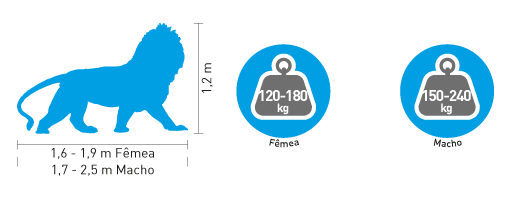
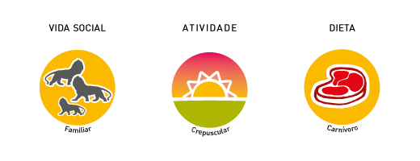
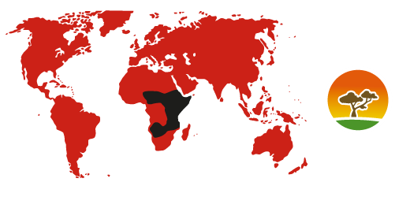
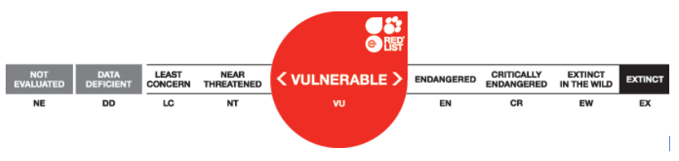

Lew angolański
Panthera leo bleyenberghi
Rząd:drapieżne
Rodzina:kotowate
Charakterystyka

Największy afrykański drapieżnik. Wyraźny dymorfizm płciowy, samce są większe i cięższe od samic, oraz posiadają grzywę. Grzywa uznawana jest za oznakę zdrowia, im bujniejsza, tym silniejszy jest noszący ją samiec. Zaobserwowano, że lwice częściej wybierają samce z dłuższymi i ciemniejszymi grzywami. Grzywa zwiększa też przewagę samca broniącego terytorium stada i stanowi ochronę głowy oraz szyi podczas walk.
Tryb życia

Jedyny gatunek dużego kota, który żyje w stadzie i tworzy specyficzną grupę społeczną. W stadzie dominuje samiec. Niżej w hierarchii znajdują się samice i młode. Głównie samice polują dla całej grupy, najczęściej o zmroku by uniknąć wykrycia.
Rozmnażanie

Samice mają tendencję do synchronicznej rui, która pozwala w późniejszym czasie na opiekę nad kociętami również od innych samic. Kocięta są całkowicie zależne od opieki w pierwszych 16 miesiącach życia.
Zasięg i siedlisko

Sawanna
Ochrona

Zagrożenia: prześladowanie, polowania organizowane przez mieszkańców z powodu narastających konfliktów z ludźmi, kłusownictwo dla pozyskania trofeów i fragmentacja siedlisk.